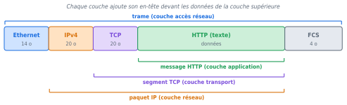
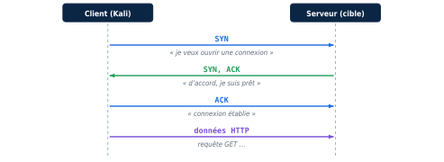
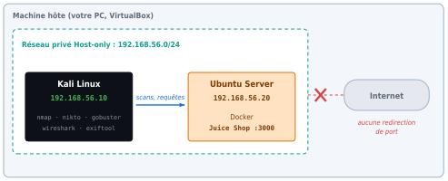

Partie 1 — Comprendre
Acquérir le vocabulaire et les mécanismes réseau indispensables pour comprendre ce que font les outils et ce qu'affichent leurs résultats.
1.1 Un réseau, des hôtes, des adresses IP
Tout équipement connecté à un réseau : ordinateur, serveur, imprimante, téléphone, machine virtuelle.
Pour que deux hôtes se parlent, chacun possède une adresse IP. Une adresse IPv4 est un nombre de 32 bits, écrit en quatre octets décimaux séparés par des points : 192.168.56.20. Chaque octet va de 0 à 255.
Indique quelle partie de l'adresse désigne le réseau et laquelle désigne l'hôte. Ainsi 192.168.56.0/24 signifie : les 24 premiers bits (192.168.56) identifient le réseau, les 8 derniers identifient l'hôte, soit 256 adresses.
| Adresse particulière | Rôle |
|---|---|
192.168.56.0 | Adresse du réseau (non attribuée à un hôte) |
192.168.56.255 | Adresse de diffusion (broadcast) : tous les hôtes du réseau |
127.0.0.1 | Bouclage (loopback) : la machine elle-même |
10.0.0.0/8, 172.16.0.0/12, 192.168.0.0/16 | Plages privées (RFC 1918), non routées sur Internet |
L'adresse IP identifie un hôte de bout en bout, à travers plusieurs réseaux.
1.2 L'adresse MAC
Identifiant d'une carte réseau sur le lien local (le même réseau physique ou Wi-Fi). 48 bits (6 octets), écrits en hexadécimal : a8:86:dd:9b:cb:20.
- Les 3 premiers octets (
a8:86:dd) forment l'OUI, identifiant du constructeur. C'est pourquoi Wireshark afficheApple_9b:cb:20: il remplace l'OUI par le nom du fabricant. - Les 3 derniers octets (
9b:cb:20) identifient la carte chez ce constructeur. - L'adresse
ff:ff:ff:ff:ff:ffest l'adresse MAC de diffusion : tous les équipements du lien la reçoivent.
L'adresse MAC ne traverse pas un routeur. Quand votre machine parle à un serveur sur Internet, la MAC de destination dans la trame est celle de votre routeur (passerelle), pas celle du serveur. C'est exactement ce que l'on verra dans la capture du ping vers 172.217.19.131.
1.3 Le modèle en couches et l'encapsulation
Une communication réseau est construite en couches. Chaque couche ajoute son en-tête devant les données reçues de la couche supérieure. À l'arrivée, chaque couche retire son en-tête : c'est la désencapsulation.
| Couche TCP/IP | Unité de données | Adresse utilisée | Exemples de protocoles |
|---|---|---|---|
| Application | Message / données | URL, nom DNS | HTTP, DNS, SSH |
| Transport | Segment (TCP) / Datagramme (UDP) | Port | TCP, UDP |
| Internet | Paquet | Adresse IP | IPv4, IPv6, ICMP |
| Accès réseau | Trame | Adresse MAC | Ethernet, Wi-Fi |

Wireshark fait le travail de désencapsulation à votre place et vous montre chaque couche dans un panneau dédié (voir partie 2).
trame = Ethernet ; paquet = IP ; segment = TCP ; message = application. Dans le langage courant on dit « paquet » pour tout, mais en analyse la distinction est utile.
1.4 Port, service, application
Nombre de 0 à 65535, associé à TCP ou UDP, qui désigne un service sur une machine. L'adresse IP désigne la machine ; le port désigne le service.
| Port | Protocole | Service habituel |
|---|---|---|
| 22 | TCP | SSH (administration à distance chiffrée) |
| 53 | UDP/TCP | DNS (résolution de noms) |
| 80 | TCP | HTTP (web non chiffré) |
| 443 | TCP | HTTPS (web chiffré par TLS) |
| 3000 | TCP | Port couramment utilisé par des applications Node.js ; ici Juice Shop |
| 3389 | TCP | RDP (bureau à distance Windows) |
Le numéro de port n'est qu'une convention. Un serveur web peut écouter sur 3000, un service SSH sur 2222. C'est pourquoi Nmap vérifie le service réel (option -sV) et ne se contente pas de la table ci-dessus. Pour le port 3000, Nmap peut afficher un nom approximatif (ppp ou http selon sa base) : l'observation à retenir est « un service répond sur le port 3000 ».
1.5 TCP, UDP et ICMP
- TCP est orienté connexion : il établit une session, numérote les données, retransmet en cas de perte. HTTP, HTTPS et SSH l'utilisent.
- UDP envoie des datagrammes sans connexion ni garantie. DNS, la découverte de services locaux et la voix l'utilisent.
- ICMP n'est pas un protocole de transport applicatif : c'est un protocole de contrôle et de diagnostic du réseau (
ping, messages « destination injoignable »).
L'établissement d'une connexion TCP (poignée de main en trois temps)

Un port ouvert répond SYN/ACK ; un port fermé répond RST (refus) ; un port filtré ne répond rien ou renvoie une erreur ICMP, car un pare-feu intercepte le paquet.
1.6 Bannière, version, HTTP en clair
Texte qu'un service renvoie en se présentant (par exemple SSH-2.0-OpenSSH_9.6). Elle peut révéler le logiciel et sa version. Une version exposée n'est pas une faille en soi, mais elle aide un attaquant à chercher des vulnérabilités connues : c'est de l'information technique exposée.
HTTP est un protocole textuel et non chiffré. Une requête ressemble à ceci :
GET /robots.txt HTTP/1.1 Host: 192.168.56.20:3000 User-Agent: curl/8.5.0 Accept: */*
Toute personne qui observe le réseau entre le client et le serveur peut lire ce texte. HTTPS enveloppe ce contenu dans TLS : un observateur voit alors des octets illisibles.
Tout échange contenant une authentification ou des données personnelles doit être chiffré (HTTPS, SSH). Un protocole en clair (HTTP, FTP, Telnet) expose son contenu à quiconque peut observer le réseau.
Moins un système expose de services, de ports et d'informations (versions, bannières), moins il offre de prises à un attaquant. On ferme ce qui est inutile et on n'expose que le nécessaire.
1.7 Reconnaissance, recherche de vulnérabilités, exploitation
Nous restons en cybersécurité défensive : on cherche ce qu'un organisme expose, afin de le réduire.
| Phase | Question posée | Exemples d'outils | Dans cet atelier |
|---|---|---|---|
| Reconnaissance | Qu'est-ce qui existe et répond ? | Nmap, Gobuster, ExifTool, Wireshark | Oui |
| Recherche de vulnérabilités | Ce qui répond est-il faible ? | Nikto, scanners de vulnérabilités | Oui, en nuançant les résultats |
| Exploitation | Peut-on utiliser la faiblesse ? | Outils d'exploitation | Non |
1.8 Le vocabulaire de l'analyse
Cinq mots à ne jamais confondre :
| Terme | Définition | Exemple dans l'atelier |
|---|---|---|
| Observation | Un fait relevé, sans interprétation | Le port 3000/tcp est ouvert |
| Preuve | Élément vérifiable qui soutient l'observation | Fichier scan.txt, capture httptest.pcapng |
| Faux positif | Alerte d'un outil qui s'avère inexacte | Gobuster signale /backup mais l'application renvoie sa page d'accueil |
| Exposition potentielle | Une donnée pourrait être accessible mais n'est pas démontrée | Un en-tête de sécurité est absent |
| Vulnérabilité confirmée | Faiblesse vérifiée (version, contexte, test autorisé) | Version vulnérable identifiée et applicable |
Combinaison de la vraisemblance (quelle chance que cela arrive ?) et de l'impact (quelles conséquences ?). Un port ouvert n'est pas un risque en soi ; un port ouvert exposant un service vulnérable, accessible à un attaquant, qui protège des données personnelles, en est un.
« Nikto a trouvé 20 alertes, donc le serveur est vulnérable ». Chaque alerte doit être vérifiée.
Un rapport distingue ce qui est démontré (fait, avec preuve), ce qui est supposé (hypothèse à vérifier) et ce qui est proposé (recommandation). On ne présente jamais une hypothèse comme un fait.
Un outil automatique produit des indices, pas des preuves. Avant de classer une alerte, on la vérifie par un second moyen (commande manuelle, lecture du contenu, comparaison avec la documentation).
1.9 Architecture du laboratoire
